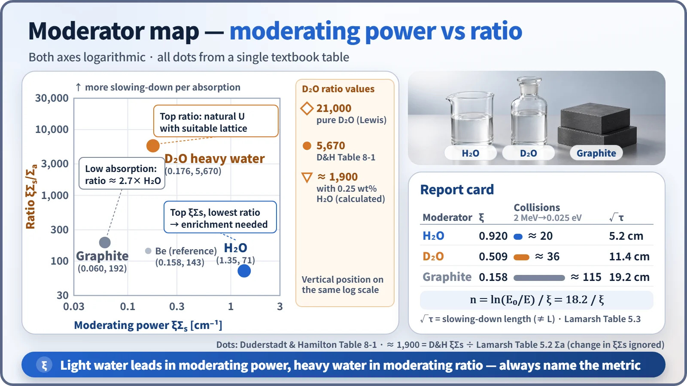
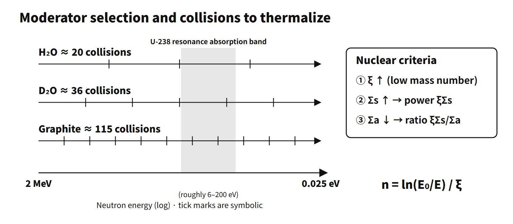

Reactor Physics & Kinetics · C-RX-007
Moderator Selection Criteria — Comparing Light Water, Heavy Water and Graphite by ξ, Moderating Power and Moderating Ratio
Energy loss per collision, moderating power and moderating ratio: why light water leads one ranking, heavy water the other, and what that means for enrichment and core design.
A moderator is a low-mass-number material that slows the fast neutrons born in fission (about 2 MeV on average) down to thermal energy (about 0.025 eV), mainly by elastic scattering. A good moderator has a large energy loss per collision (ξ↑), frequent scattering (Σs↑) and little absorption (Σa↓).
In one sentence, with both the definition and the figures of merit: "a material that slows fast neutrons to thermal energy in few collisions and without absorbing them; the larger the moderating power ξΣs and the moderating ratio ξΣs/Σa, the better."
Principle and mechanism
Why moderation is needed
The fission cross section of U-235 is about 585 b in the thermal range, hundreds of times larger than in the fast range (1–2 b). Slowing neutrons to thermal energy therefore makes criticality possible with low-enriched uranium (about 4–5 % in a PWR) or even natural uranium (CANDU). On the way down, neutrons must cross the main resonance-absorption range of U-238 (roughly 6–200 eV). The fewer collisions it takes to get through this range, the smaller the resonance-absorption loss and the larger the resonance escape probability p. Fast reactors (LMFBR), by contrast, deliberately exclude low-mass materials and have no moderator.
Three selection criteria: ξ, moderating power and moderating ratio
| Criterion | Measure | Meaning |
|---|---|---|
| Large energy loss per collision | ξ = 1 + α·lnα/(1−α), α = [(A−1)/(A+1)]² | Larger for smaller mass number A |
| Frequent collisions | Moderating power ξΣs [cm⁻¹] | Low-density gases are unsuitable |
| Little absorption | Moderating ratio ξΣs/Σa | Overall figure of merit of a moderator |
| Short slowing-down distance | Slowing-down length √τ | Linked to core size and power density |
ξ is the average gain in lethargy per collision. The number of collisions to thermalize is n = ln(E₀/E)/ξ; from 2 MeV to 0.025 eV, ln(8×10⁷) = 18.2. Hydrogen has α = 0, so a neutron loses on average half its energy in one collision; with carbon it loses only about 14 %.
Report card: light water, heavy water and graphite

| Moderator | ξ | Collisions, 2 MeV→0.025 eV | Moderating power ξΣs [cm⁻¹] | Moderating ratio ξΣs/Σa | Slowing-down length √τ [cm] | Thermal diffusion length L [cm] |
|---|---|---|---|---|---|---|
| H₂O | 0.920 | about 20 | 1.35 | 71 | 5.2 | 2.85 |
| D₂O | 0.509 | about 36 | 0.176 | 5,670 | 11.4 | 97 |
| Be | 0.209 | about 87 | 0.158 | 143 | 10.1 | 21 |
| Graphite (C) | 0.158 | about 115 | 0.060 | 192 | 19.2 | 59 |
ξ, ξΣs and the moderating ratio are from Duderstadt & Hamilton Table 8-1; L and τ are from Lamarsh Tables 5.2 and 5.3 (20 °C). The slowing-down length √τ measures the distance to thermalization; it is a different quantity from the thermal diffusion length L, which measures how far a thermal neutron travels before it is absorbed. The collision numbers down to 0.025 eV were recalculated with the equation above. The same table's collision numbers from 2 MeV to 1 eV (16/29/69/91) agree with ln(2×10⁶)/ξ (15.8/28.5/69.4/91.8). For a molecule, ξ is the average of the elemental ξ values weighted by scattering cross section; for H₂O, (2×20×1 + 3.8×0.120)/43.8 ≈ 0.92 checks out.
Reported moderating ratios vary widely between references: 58–71 for light water, 192–200 for graphite and 5,670–21,000 for heavy water. The reasons are differences in the evaluation energy, in the basis for Σa and, above all, in heavy-water purity. Dividing the same moderating power, 0.176, by the Σa of heavy water containing 0.25 wt% H₂O (9.3×10⁻⁵ cm⁻¹, Lamarsh Table 5.2) gives about 1,900. Even a little light water cuts the moderating ratio to a fraction of its value.
How to read it: light water is first in moderating power, heavy water is first in moderating ratio. Graphite is last in moderating power, but its low absorption gives it a moderating ratio about 2.7 times that of light water. That is why heavy-water and graphite reactors can use natural uranium with a suitable lattice design, while light-water reactors need enrichment. The moderating ratio alone does not guarantee criticality, but it sets the range of fuel choices.
What it means in a plant
| Item | PWR (light water) | PHWR/CANDU (heavy water) | HTGR (graphite) |
|---|---|---|---|
| Moderator-to-fuel volume ratio | 1.95 | 17 | 135 |
| Average power density [MW/m³] | 102 | 7.7 | 6.6 |
| Enrichment | about 4.2 % | 0.7 % (natural) | about 15 % |
These are representative values from Lewis, Table 4.1 (3,000 MWt cores). Light water has a large moderating power, so little moderator is needed and the slowing-down length is short. The lattice is therefore the tightest and the power density the highest. On the other hand, its absorption is large, so adding moderator beyond a point lowers k∞. Light-water reactors are therefore designed on the under-moderated side, with less moderator than at the k∞ peak. As a result, a rise in moderator temperature or the formation of voids reduces moderation and produces negative reactivity feedback.
Moderator and coolant by reactor type
| Reactor type | Moderator | Coolant | Features |
|---|---|---|---|
| PWR | H₂O | H₂O (pressurized, boiling suppressed) | Moderator = coolant, dissolved boric acid |
| BWR | H₂O | H₂O (boiling in the core) | Voids reduce moderation → negative void coefficient |
| PHWR (CANDU) | D₂O (calandria, low temperature and pressure) | D₂O (pressure tubes, high temperature and pressure) | Moderator and coolant separate, natural uranium, on-power refueling |
| HTGR | Graphite | He | High-temperature operation, graphite also serves as structure |
| LMFBR | None | Na | Fast spectrum |
| (Reference) RBMK | Graphite | H₂O (boiling) | Water acts mainly as an absorber → positive void coefficient |
Criteria beyond nuclear performance
- Thermal and structural: when the moderator is also the coolant, specific heat and heat transfer matter. Graphite keeps its strength at high temperature, so it serves as both moderator and structural material in HTGRs.
- Chemistry and materials: water radiolysis produces hydrogen and oxygen, which is managed by water chemistry. Graphite oxidizes if air or steam gets in, and irradiation deformation and the build-up of Wigner energy under low-temperature irradiation are concerns (the background to the 1957 Windscale fire).
- Radiation protection: in heavy water, neutron capture D(n,γ)T builds up tritium.
- Economics: light water is cheap and abundant. Heavy water carries a large isotope-separation cost, and graphite must be reactor-grade, purified of boron and other impurities.
When light water gets into the CANDU moderator
On a pure-heavy-water basis the CANDU lattice sits on the generously moderated side (volume ratio about 17), which makes it sensitive to changes in absorption. The Σa of H₂O is about 200 times that of D₂O (0.0197 versus 9.3×10⁻⁵ cm⁻¹). When light water mixes in, moderation becomes slightly faster, but the increase in thermal-neutron absorption dominates: f falls and negative reactivity is inserted. The thermal diffusion length also shortens and the flux distribution changes. Heavy-water isotopic purity is therefore monitored continuously and maintained with upgrading equipment, and ingress paths (such as heat-exchanger leaks) are closed off. The quantitative reactivity sensitivity is a matter for core analysis, so only the direction is given here.
Regulatory and design criteria
The criteria below are examples from the United States (US NRC) and the IAEA.
- 10 CFR 50 Appendix A, GDC 11 (reactor inherent protection): in the operating range, the net effect of the prompt inherent feedback must tend to compensate for a rapid increase in reactivity. This is the direct basis for the choice of moderator and for under-moderated lattice design. GDC 26 and 28 cover reactivity control and reactivity limits.
- NUREG-0800 SRP 4.3 (Nuclear Design): reviews the calculation methods and uncertainties of the moderator temperature and void coefficients.
- Standard Technical Specifications NUREG-1431, LCO 3.1.3 Moderator Temperature Coefficient: sets an upper limit at beginning of cycle and a lower limit at end of cycle, with the numbers managed in each unit's core operating limits report (COLR).
- IAEA SSR-2/1 Rev. 1 (2016): requires the core design to achieve stability through inherent feedback.
Easily confused pairs
| Moderating power ξΣs | Moderating ratio ξΣs/Σa | |
|---|---|---|
| What it asks | Slowing-down ability per unit length | Slowing-down ability relative to absorption |
| Best | Light water (1.35 cm⁻¹) | Heavy water (5,670 or more) |
| Rank of light water | Best | Worst (about 70) |
| Design consequence | Compact core, short slowing-down length | Whether natural uranium can reach criticality |
| Moderation | Absorption | |
|---|---|---|
| Result | Neutron energy falls, neutron count kept | Neutron disappears |
| Wanted in a moderator | Large (ξΣs↑) | Small (Σa↓) |
Saying only "heavy water is the best moderator" is incomplete. Always state which measure the comparison uses.
Key points at a glance
- Definition: a low-mass-number material that slows fast neutrons (about 2 MeV) to thermal neutrons (about 0.025 eV) by elastic scattering.
- Need: the thermal fission cross section of U-235 (about 585 b) is hundreds of times the fast value → low-enriched or natural uranium can be used, and fast passage through the resonance range reduces resonance absorption.
- Criterion 1: large ξ (small mass number) → few collisions to thermalize (H₂O about 20, graphite about 115).
- Criterion 2: large moderating power ξΣs (high density; gases unsuitable).
- Criterion 3: large moderating ratio ξΣs/Σa → heavy water > graphite > light water.
- Non-nuclear criteria: thermal and chemical stability, little radiation damage, low cost, compatibility with use as coolant, negative reactivity feedback.
- Advantages of light water: largest ξ and moderating power → slowing-down length about 5 cm and a compact core; doubles as coolant; cheap and stable; under-moderated design gives negative MTC and void coefficient.
- Drawbacks of light water: large absorption (lowest moderating ratio) → enrichment needed; high pressure needed at high temperature.
- Comparison: heavy water has the largest moderating ratio but is expensive and produces tritium; graphite doubles as high-temperature structure but suffers oxidation and Wigner energy.
- Overall: light water's advantage lies in the combination of moderating performance, thermal properties, cost and safety, not in every measure — its moderating ratio is the lowest, which is why enrichment is needed.
